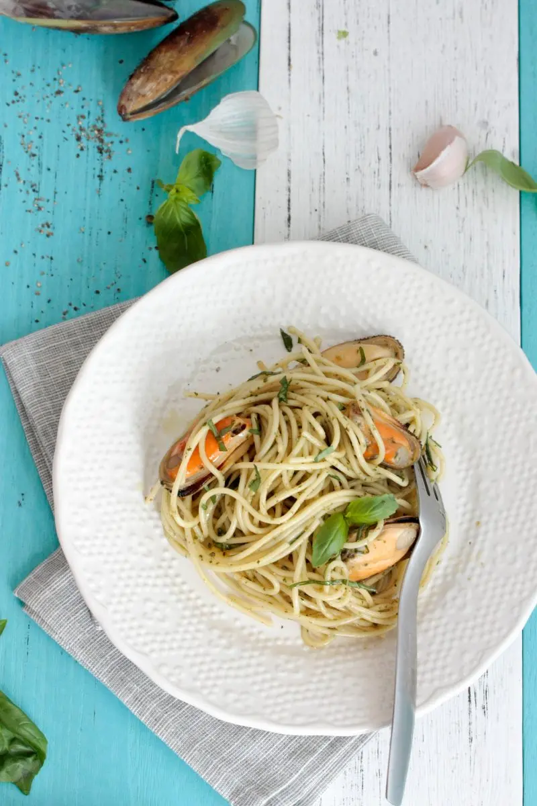
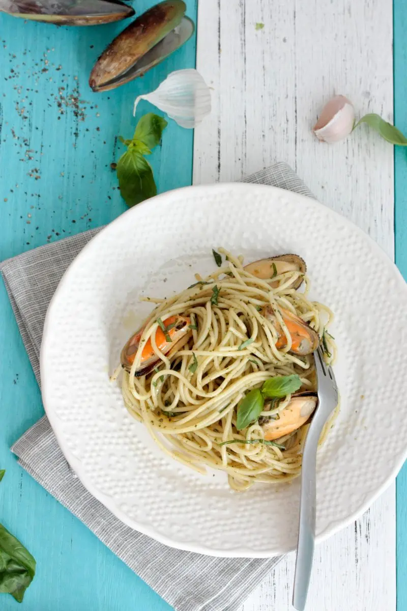

🍓 Strawberry Milkshake Recipe 🍓
🌟 Introduction
A strawberry milkshake is a creamy, refreshing, and delicious drink made with fresh strawberries, milk, and ice cream. Perfect for hot summer days or as a sweet treat anytime, this shake is loved by kids and adults alike! 😋🥤
🛒 Ingredients
- 1 cup fresh strawberries (washed and hulled) 🍓
- 2 cups cold milk 🥛
- 2 scoops vanilla ice cream 🍦
- 2 tablespoons sugar or honey (adjust to taste) 🍯
- ½ teaspoon vanilla extract (optional, for extra flavor) 🌿
- Whipped cream & strawberry slices (for garnish)🍓
🥄 Steps to Make the Perfect Strawberry Milkshake
- Prepare the Strawberries – Wash and hull fresh strawberries. If they’re not sweet enough, macerate them with a little sugar for 10 minutes.
- Blend Everything Together – In a blender, add the strawberries, milk, ice cream, sugar, and vanilla extract.
- Blend Until Smooth – Blend for about 30–40 seconds until creamy and lump-free.
- Check the Consistency – If too thick, add a little more milk. If too thin, add more ice cream or some ice cubes.
- Serve & Enjoy – Pour into glasses, top with whipped cream, and garnish with strawberry slices. Serve chilled!
🥗 Fresh Vegetable Salad Recipe 🥗
🌟 Introduction
A vegetable salad is a nutritious, crunchy, and refreshing dish packed with vitamins and minerals. Perfect as a light meal, side dish, or healthy snack, this salad is both delicious and easy to prepare! 🥬🥕
🛒 Ingredients
- 1 cup lettuce or spinach (chopped) 🥬
- 1 cucumber (sliced) 🥒
- 1 tomato (diced) 🍅
- 1 carrot (grated or thinly sliced) 🥕
- ½ red bell pepper (chopped) 🌶️
- ½ yellow bell pepper (chopped) 🫑
- ¼ cup sweet corn 🌽
- ¼ red onion (thinly sliced) 🧅
- ¼ cup feta cheese or paneer (optional) 🧀
- 1 tablespoon nuts/seeds (almonds, sunflower seeds, or flaxseeds for crunch) 🌰
🥄 Steps to Make a Delicious Vegetable Salad
- Prepare the Vegetables – Wash and chop all vegetables into bite-sized pieces.
- Mix Everything – In a large bowl, add the chopped veggies, corn, and cheese.
- Prepare the Dressing – In a small bowl, mix:
- 2 tbsp olive oil 🫒
- 1 tbsp lemon juice 🍋
- ½ tsp salt 🧂
- ½ tsp black pepper
- ½ tsp honey (optional, for slight sweetness) 🍯
- Toss the Salad – Pour the dressing over the veggies and mix well.
- Garnish & Serve – Sprinkle nuts/seeds on top and serve fresh! 😍
🥞 Honey Pancakes Recipe 🍯
🌟 Introduction
These fluffy honey pancakes are naturally sweet, soft, and perfect for breakfast or a weekend treat! Drizzled with golden honey and topped with fruits or nuts, they make a delicious and healthy meal. 🍯🥞
🛒 Ingredients
- 1 cup all-purpose flour 🍚
- 1 tablespoon baking powder 🥄
- ½ teaspoon salt 🧂
- 1 cup milk 🥛
- 1 egg 🥚
- 2 tablespoons melted butter 🧈
- 2 tablespoons honey 🍯
- 1 teaspoon vanilla extract 🌿
- Butter or oil for cooking 🛢️
- Extra honey & fruits for topping 🍓🍌
🥄 Steps to Make Delicious Honey Pancakes
- Prepare the Batter – In a large bowl, whisk together flour, baking powder, and salt.
- Mix Wet Ingredients – In another bowl, mix milk, egg, melted butter, honey, and vanilla extract.
- Combine & Stir – Gradually add the wet mixture into the dry ingredients and stir until smooth (don’t overmix).
- Cook the Pancakes – Heat a pan with butter/oil over medium heat. Pour small amounts of batter and cook for about 2 minutes until bubbles form, then flip and cook for another minute.
- Serve & Enjoy – Stack the pancakes, drizzle with extra honey, and top with fruits or nuts. Enjoy warm! 😋


 
